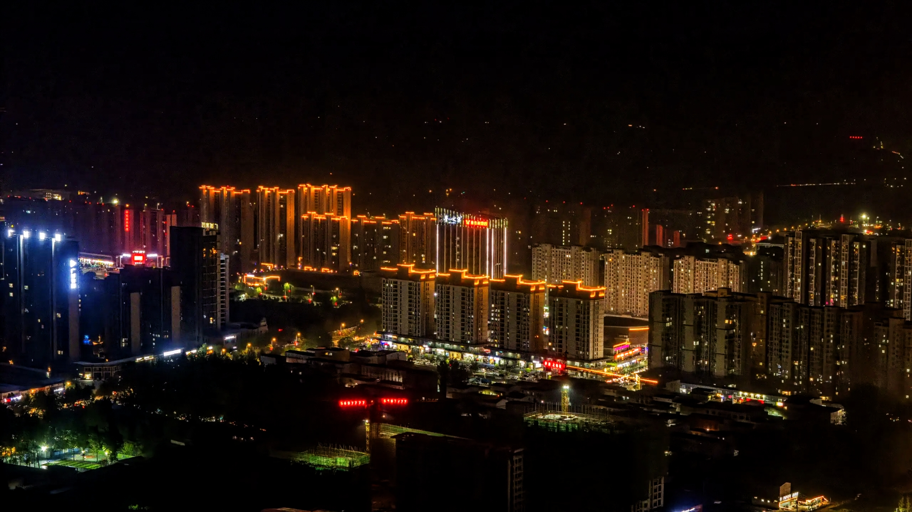
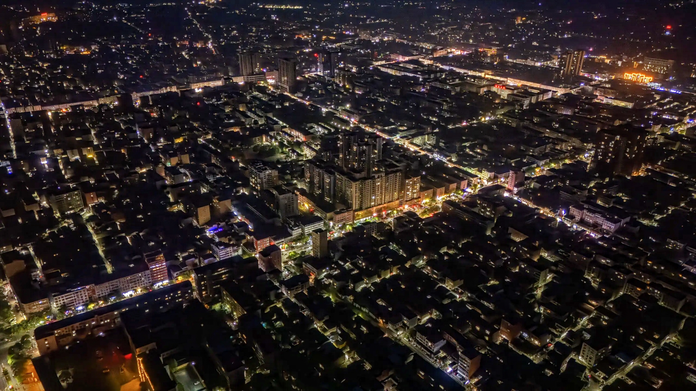

鲁山县作为河南省平顶山市下辖行政区域，承载着厚重的历史文化与重要的区域发展使命。其历史可追溯至汉代设县，历经两千余年沿革，是世界刘姓公认发源地、华夏造字鼻祖仓颉故里，孕育了墨子、元结、牛皋等彪炳史册的杰出人物。县域内文化资源富集，鲁山花瓷烧制技艺入选国家级非物质文化遗产代表性项目名录，楚长城遗址、汉代冶铁遗址等5处遗迹被核定公布为全国重点文物保护单位，同时留存豫西革命纪念馆等丰富红色文化资源，见证重要革命历史进程。在区域发展格局中，鲁山县作为平顶山市重要组成单元，深度融入全市发展战略布局，依托独特资源禀赋，全面推进经济建设与文化传承保护工作，持续提升县域综合实力与区域影响力，为推进新时代区域高质量发展贡献积极力量。
鲁山县坐拥丰富的自然资源。这里有国家5A级景区尧山，奇峰林立，怪石嶙峋，主峰玉皇顶海拔2153.1米，为八百里伏牛山主峰之一。尧山的瀑布群更是一绝，黑龙潭瀑布、白龙潭瀑布等，或气势磅礴，或灵动飘逸，水流在山间奏响自然的乐章。此外，昭平湖碧波浩渺，面积广阔，湖岸线曲折绵延，既有湖光山色之美，又有水利枢纽的实用价值，滋养着一方土地。
鲁山历史悠久，人文荟萃。这里是刘姓的发源地之一，西汉初置鲁阳县，历经千年，留存下众多珍贵的历史遗迹。始建于金代的阿婆寨长城，虽没有万里长城那般闻名遐迩，却也独具古朴沧桑之美，见证着岁月变迁。而中原大佛，高208米，是世界上最高的佛教造像之一，庄严肃穆，吸引着无数信众和游客前来瞻仰朝拜，成为鲁山宗教文化和旅游的标志性名片。
鲁山的民俗文化丰富多彩。鲁山花鼓戏，曲调优美，表演形式活泼，以浓郁的生活气息和地方特色深受百姓喜爱，其唱词质朴，演绎着民间的家长里短、喜怒哀乐。鲁山揽锅菜也是一绝，这道传统美食融合了肉、豆腐、粉条等食材，大铁锅炖煮，香气四溢，是鲁山人乡愁的味觉寄托，更是招待四方来客的美味佳肴。
如今的鲁山县，在保留传统魅力的同时，也积极拥抱发展机遇。依托丰富的旅游资源，大力发展生态旅游、乡村旅游，民宿产业蓬勃兴起，特色旅游商品琳琅满目。工业方面，在新材料、装备制造等领域不断探索前进，农业也朝着现代化、特色化方向发展，蓝莓、香菇等特色农产品走出鲁山，走向更广阔的市场。
 